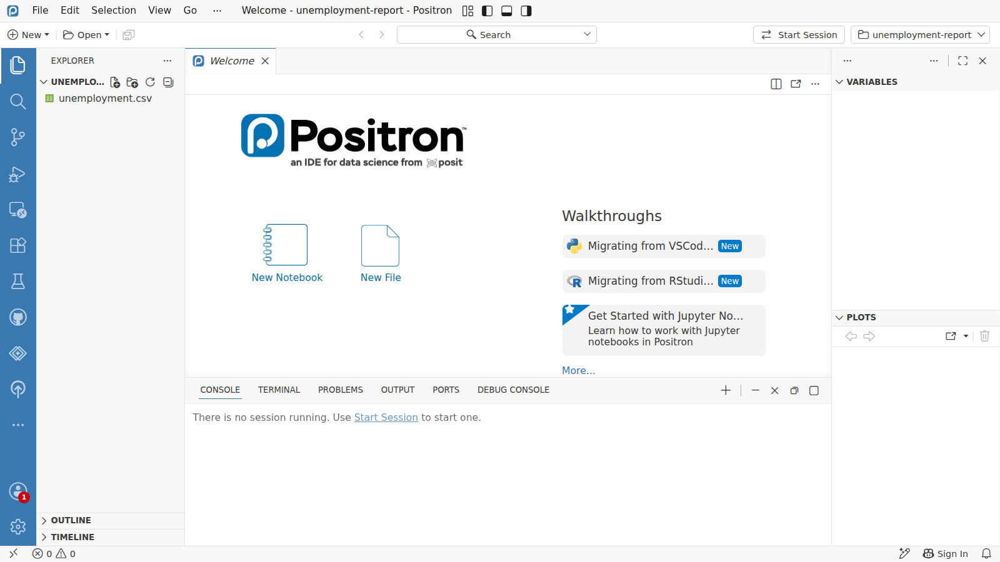
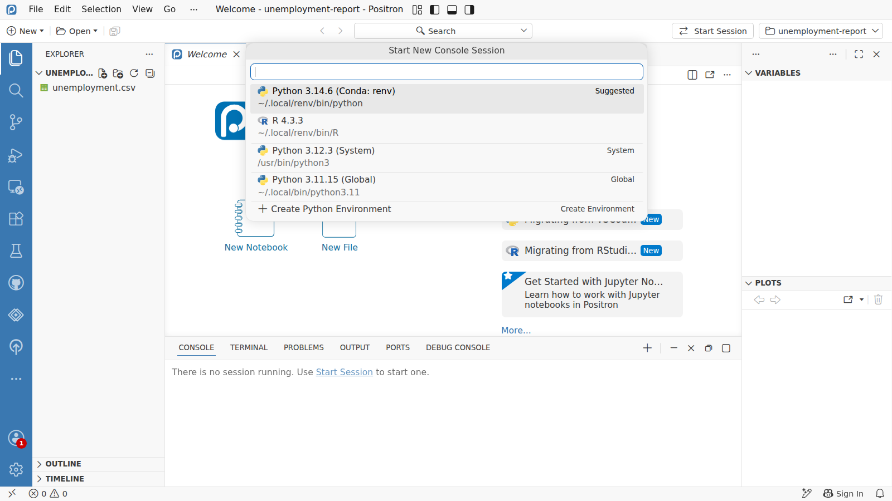
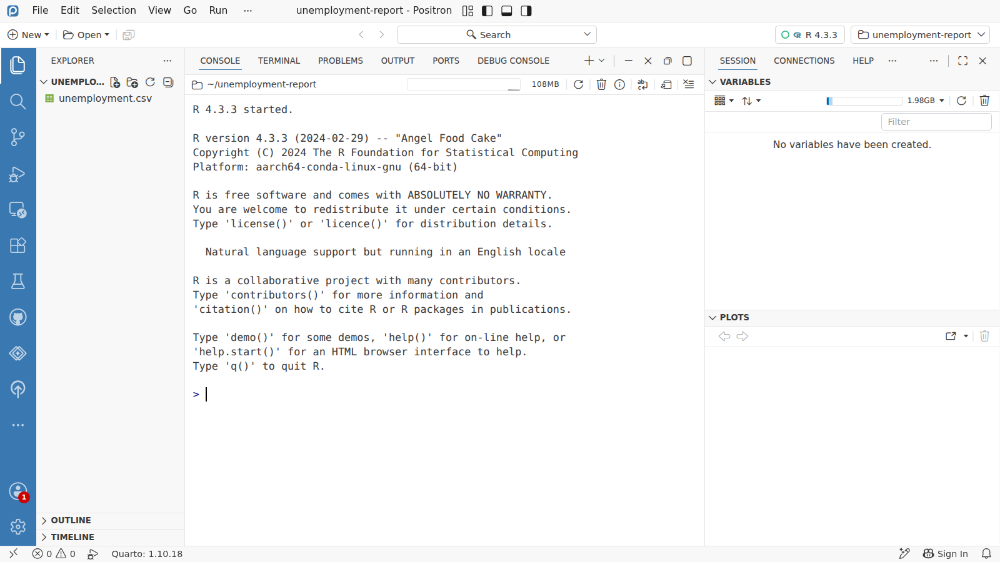

Day 1 · Start here
Opening Positron



Explorer
Start Session
R 4.3.3
Console
Variables
Plots
R is running
1
This is Positron, the editor we use all week. It opens on a Welcome page, with your project folder on the left.
2
The Explorer lists the files in the project folder. For now there is one: the data,
unemployment.csv.3
Nothing runs yet. Press Start Session at the top to start R.
4
Choose R. Positron also lists any Python it finds on the machine; this course always uses R.
5
R is running. The Console is where you talk to R, and where it answers.
6
Variables will list every object you make, with what it holds.
7
Plots will show every chart you draw.
8
The running language shows at the top. Click it to restart R when something hangs.